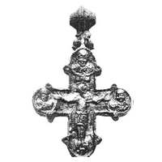
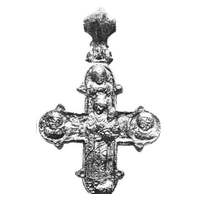

Catalog › CE-0634 · KOR2003-II.1.1.13
Encolpion cu inel biconic, în relief foarte înalt, afectat de incendiu; Răstignire pe față, Odighitria pe revers
sec. nu mai târziu de prima treime XIII (1201–1300) · Vladimir pe Kliazma, Rusia · Centrul de Stat pentru evidența, utilizarea și restaurarea monumentelor de istorie și cultură din regiunea Vladimir (Goscentr), Vladimir, inv. В-93 (К-22)/293
double-sided reliquary cross (enkolpion), aramă; c. nu mai târziu de prima treime XIII (1201–1300); found at Vladimir pe Kliazma, Rusia; kept at Centrul de Stat pentru evidența, utilizarea și restaurarea monumentelor de istorie și cultură din regiunea Vladimir (Goscentr), Vladimir.




Identificare
- Categorie
- Encolpion bivalv (relicvar)
- Material
- Aramă
- Tehnică
- Turnare în relief; Gravare (incizie)
- Stare
- Întreagă
- Dimensiuni
- Î 82 × L 73 × Gr 6 mm
Iconografie
- Avers
- Sf. Ioan
- Descriere avers
- Hristos răstignit ocupă centrul și capătul de jos; lemnul crucii redat prin elemente în relief ale stâlpului vertical (tăbliță cu urme de monogramă și suppedaneum); la baza crucii golgotice capul lui Adam. În medalioane busturi în relief: la stânga un sfânt necunoscut (cu capul întors spre Hristos și brațele întinse spre El) [Maica Domnului în poziție de rugăciune], la dreapta Ioan Teologul (mâna dreaptă la față, stânga ridicată spre Hristos), sus imagine frontală a unui sfânt necunoscut.
- Revers
- Maica Domnului cu Pruncul; Sfinți militari
- Descriere revers
- Pe capătul de jos, în centru, figura în relief a Maicii Domnului cu Pruncul (Odighitria), în picioare pe sol; în medalioane busturi în relief: la stânga un sfânt necunoscut (?) cu capul ușor aplecat și întors spre Maica Domnului, în celelalte sfinți militari.
- Inscripții
- IC XC (monogramă, față)
- Limba
- Greacă
Datare și atribuire
- Datare
- sec. nu mai târziu de prima treime XIII (1201–1300)
- Centru
- Necunoscut
- Tipologie
- Korzukhina–Peskova 2003, tip II 1 1
Descoperire
- Localitate
- Vladimir pe Kliazma
- Țară
- Rusia
- Context
- Așezare
- Anul
- 1993
Păstrare și referințe
- Colecție
- Centrul de Stat pentru evidența, utilizarea și restaurarea monumentelor de istorie și cultură din regiunea Vladimir (Goscentr), Vladimir
- Nr. inventar
- В-93 (К-22)/293
- Bibliografie
- G. F. Korzukhina, A. A. Peskova, Древнерусские энколпионы. Нагрудные кресты-реликварии XI–XIII вв., Sankt-Petersburg, 2003 [Korzukhina–Peskova 2003], p. 63, cat. nr. II 1 1/13, reprodusă la Табл. 24 (planșe, p. 266). Bibliografie citată în sursă: Жарнов 1994, 61–62; Жарнов 1997, 82–93; Жарнов 2000, 183–193, рис. 1, 2.
- Figura
- Табл. 24
- Planșe
- Korzukhina–Peskova 2003, Табл. 24 (planșă fără paginație proprie în PDF; p. 266 tipărită)
- Observații
- Datare după Peskova: sec. nu mai târziu de prima treime XIII. Circumstanțe: Săpături arheologice 1993 (Vetceanîi gorod); găsit în partea de jos a umpluturii unei pivnițe a unei locuințe arse în februarie 1238, din aceeași construcție provine un tezaur de obiecte de cult creștin; șef Iu. E. Jarnov. Dimensiuni: h 8,2–8,5 cm; l 7,3–7,4 cm; înălțimea valvelor 0,6–0,8 cm. Turnat cu folosirea unei forme de piatră, retușat cu dalta; analiză spectrală (Tabelul I, p. 64): aliaj bronz, Sn 21% (față), 29% (revers). Inel de agățare în formă de mărgea biconică goală cu brâuri; crucea a stat în foc, reliefurile parțial topite (cea mai afectată valva de față), valvele s-au lipit; la restaurare una dintre jumătăți s-a deteriorat, înăuntru găsindu-se bucăți mici de lemn (posibil lemnul crucii). Medalioanele și marginea sunt încadrate de un guler în relief, pe alocuri cu crestături. Singura inscripție explicativă consemnată este monograma IC XC. Coordonate: nu sunt date în sursă.
Citare: Corpus Encolpiorum, CE-0634, Encolpion cu inel biconic, în relief foarte înalt, afectat de incendiu; Răstignire pe față, Odighitria pe revers, https://vitaliejosanu1979-ux.github.io/primul-meu-proiect/piese/KOR2003-II.1.1.13/ (accesat 2026-10-17).